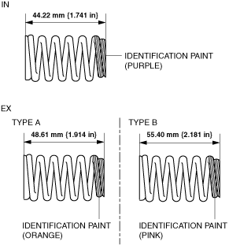
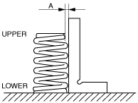

• The valve springs differ depending on the IN and EX sides. Therefore, verify the free length or identification paint beforehand and inspect the valve springs.

bes3ze00000133
1. Measure the valve spring height using the spring tester.
bp31je00000053
• If it is not within the specification, replace the valve spring.
Valve spring installation height
IN: When pressurized with spring force of 128.3—141.7 N {13.09—14.44 kgf, 28.85—31.85 lbf}, spring height is 35.0 mm {1.38 in}
EX (TYPE A): When pressurized with spring force of 137.8—152.2 N {14.06—15.52 kgf, 30.98—34.21 lbf}, spring height is 35.0 mm {1.38 in}
EX (TYPE B): When pressurized with spring force of 209—231 N {21.4—23.5 kgf, 47.0—51.9 lbf}, spring height is 35.0 mm {1.38 in}
2. Measure the amount of off-square on the valve spring using a square.

beltze00000017
(1) Rotate the valve spring one full turn and measure A at the point where the gap is the largest.
• If it exceeds the maximum specification, replace the valve spring.